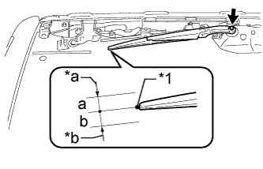

REAR WIPER MOTOR > ON-VEHICLE INSPECTION |
| 1. INSPECT REAR WIPER MOTOR ASSEMBLY |
Operate the rear wiper motor assembly.
Stop the rear wiper motor assembly operation.
|  |
Align the blade tip with the mark on the glass as shown in the illustration.
| *1 | Ceramic Dot |
| *a | Upper Limit |
| *b | Lower Limit |
Check the automatic stop position.
| Area | Specified Condition |
| a | 10 mm (0.394 in.) |
| b | 10 mm (0.394 in.) |